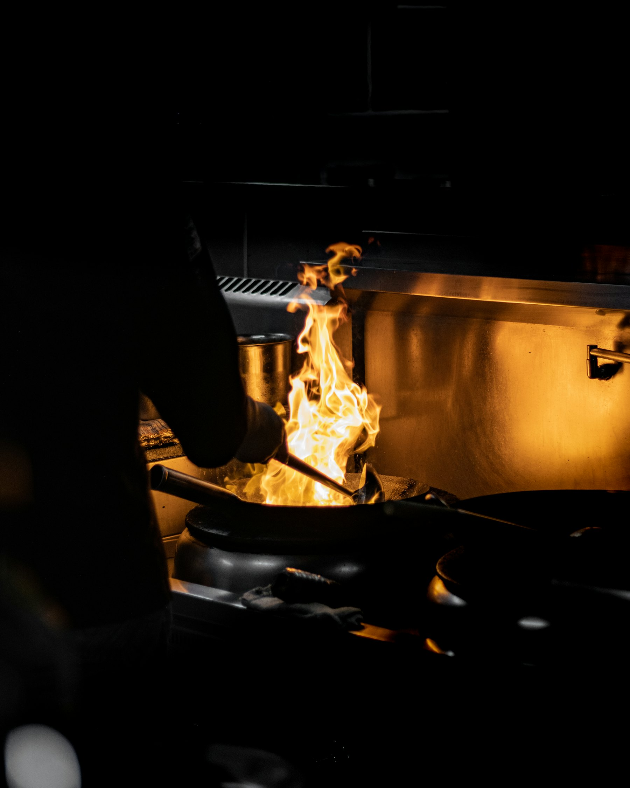

Kalaa, ruista ja lammasta koivun liekeillä, graniittiholvin alla.
Holvissa on 38 paikkaa vuonna 1888 louhitussa kauppiaan kellarissa Kruununhaassa. Yksi puutuli, lyhyt saaliin mukaan elävä ruokalista ja keittiö, joka näkyy jokaiseen pöytään.
Avoinna tiistaista lauantaihin klo 17.00 alkaen.

Tällä viikolla tulelta
Ruokalista vaihtuu joka tiistai sen mukaan, mitä veneet ja tilat tuovat.
-

Siikaa koivun liekeillä
32 €Ruskistettua voita, suolakurkkua
-

Ahvenanmaan lampaanlapa
36 €Katajaa, hiilloksessa paahdettua juuriselleriä
-

Ruoveden naudanlihaa
38 €Savustettu luukastike, hiillostettu sipuli

Neljä metriä Liisankadun alla
Kellari louhittiin vuonna 1888 viljakauppiaan varastoksi, joka pysyi viileänä kesänkin yli. Seinät ovat paikallista graniittia, katossa on kolme tiiliholvia, eikä lämpötila täällä alhaalla juuri vaihtele vuoden aikana.
Tuli on paikassa, jossa ennen oli lastausluukku, joten savu nousee suoraan ylös ja ulos, ja sali tuoksuu koivulta eikä ruoanlaitolta.
- Paikkoja
- 38
- Tuli
- Koivua koko illan
- Ruokalista
- Uusi joka tiistai
Pöytiä klo 17.00 alkaen, tiistaista lauantaihin.
Pidämme joka ilta kuusi keittiötiskin paikkaa vapaana ilman varausta tuleville. Muualle saliin varaus on varminta perjantaisin ja lauantaisin.
Varaa pöytä